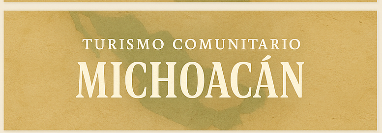
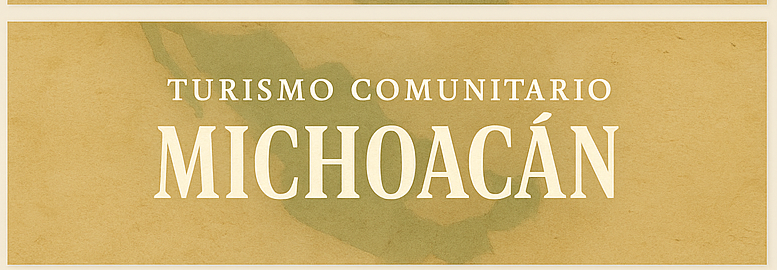

Michoacán – Turismo Comunitario
Bienvenido a las experiencias de turismo comunitario en Michoacán.

Comunidades Otomí y Tepehua
Descubre las tradiciones, artesanías y senderismo en estas regiones.
Bienvenido a las experiencias de turismo comunitario en Michoacán.
Descubre las tradiciones, artesanías y senderismo en estas regiones.
